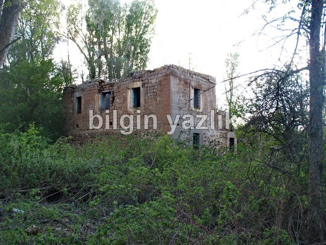

Kayseri & Koramaz · 3 Mayıs 2014
Kemer İçi Değirmeni
Ağırnas sınırları içerisinde kalan, Bünyan yolu üzerinden kuzey yönüne saparak ulaşabileceğiniz 90’lı yıllara kadar aktif olarak görev yapmış bir değirmen. Şu an harabe durumda ve görülmeye değer.

Bu yazı taliyol arşivinden taşınmıştır. · özgün kayıt